Juego de 4 · regalo
Posavasos
Cada uno lleva unas 28 tapitas de Cusco. Veteado único, para tu mesa o para regalar.
Plástico reciclado · Cusco
Convertimos el plástico duro de Cusco en piezas hechas a mano, y te enseñamos a hacerlo en nuestros talleres.
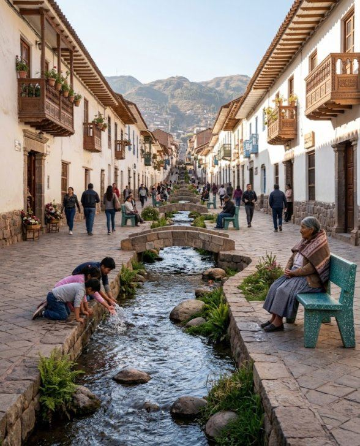
Contador del taller
Lo que hacemos
Productos
Los posavasos ya están listos. Los muebles se hacen a pedido: cada pieza sale numerada y lleva un código QR con su historia. Los colores salen del plástico que llega.
Cada uno lleva unas 28 tapitas de Cusco. Veteado único, para tu mesa o para regalar.
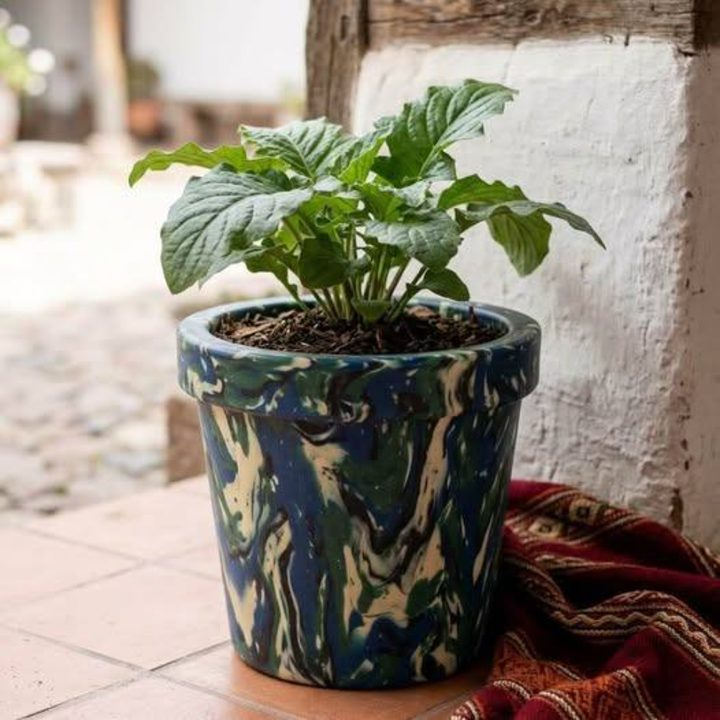
Dentro o fuera de casa. Cada uno con su propio veteado.
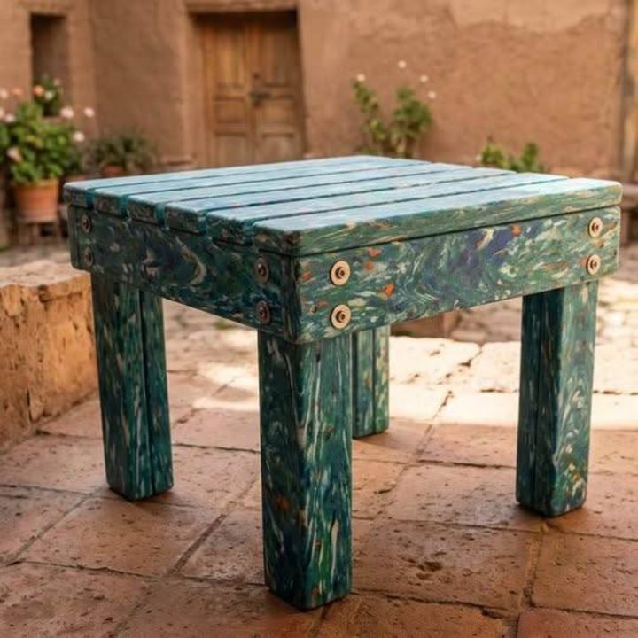
Para la casa, el patio o la tienda. No se pudre ni le entra polilla.
Para negocios e instituciones
Parques, plazas, paraderos y patios. No se pudren ni se pintan.
Tu hotel o colegio junta sus tapitas y le devolvemos muebles hechos con ellas.
Posavasos y piezas hechas con el plástico de tu empresa, para clientes y eventos.
Aliados
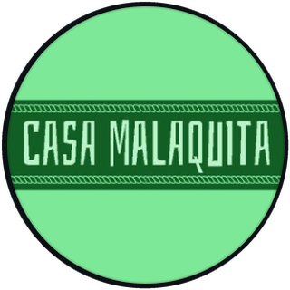
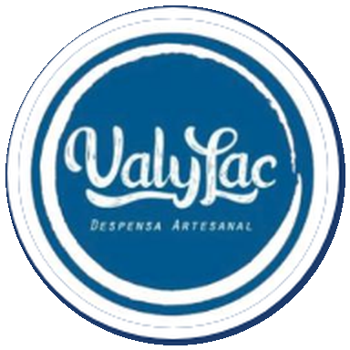
¿Conoces un negocio que bota mucho plástico? Nómbralo y lo invitamos a ser aliado.
Educación · talleres
Un taller práctico de 2 horas: aprendes qué plástico sirve, lo derrites con nosotros y te llevas una pieza hecha por ti. En tu colegio, tu empresa o en nuestro taller de San Jerónimo.
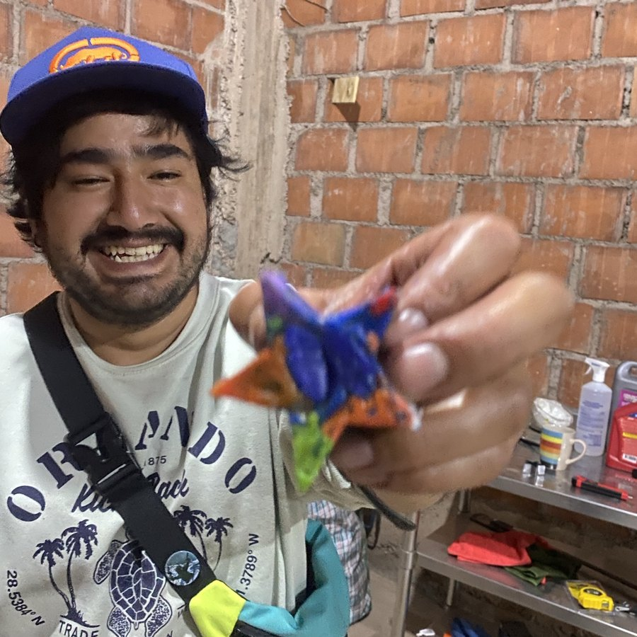
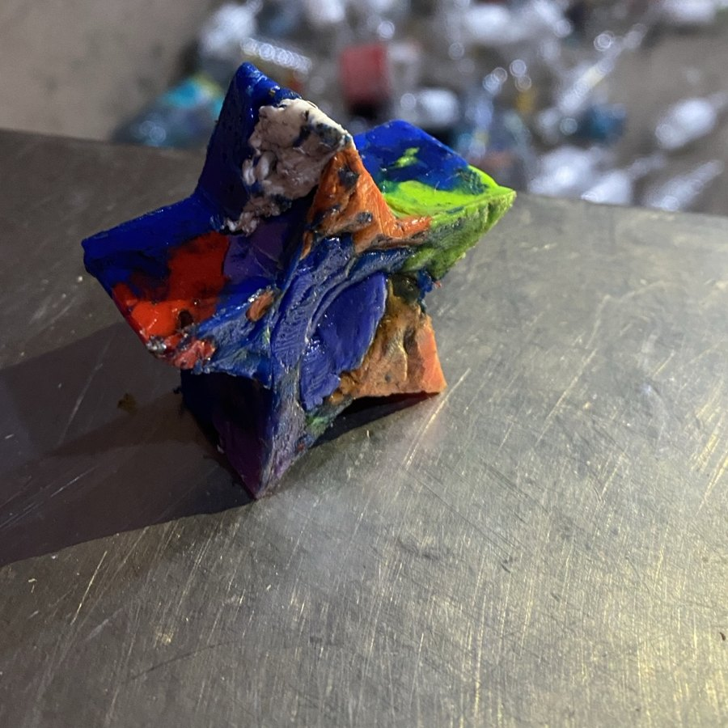
Ciencia, ambiente y reciclaje en una sola sesión.
Tu equipo convierte el plástico de la oficina en regalos con tu marca.
Una actividad distinta para tus huéspedes.
Escríbenos con el día, el lugar y cuántas personas. Incluye materiales, guantes y mascarillas.
Antes de juntar
✓Esto sí
✕Esto no
La regla rápida: si es duro, no se arruga con la mano y suena hueco, casi siempre sirve. Busca el 2 dentro del triangulito. Siempre limpio y seco.
Dónde dejar tu plástico
En greensonqo.com aquí se ve el mapa de Google en vivo.
Aprende más
Media
Videos en español e inglés sobre la gente, la comida, los animales y la tierra de los Andes, y sobre lo que hacemos en el taller.
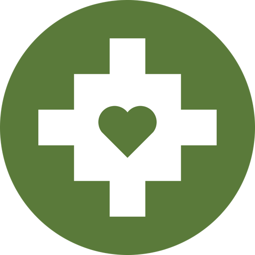
Nosotros
Sonqo quiere decir corazón en quechua. Nuestro símbolo es una chakana, la cruz andina, con un corazón en el centro. Juntamos dos palabras y dos mundos, como en la profecía del Águila y el Cóndor: cuando el águila del norte (la mente, la tecnología) y el cóndor del sur (el corazón, la sabiduría ancestral) vuelen juntos, la Tierra empieza a sanar.
Frente al cambio climático hay muchas maneras de actuar. La nuestra: mirar cada problema climático como una oportunidad.
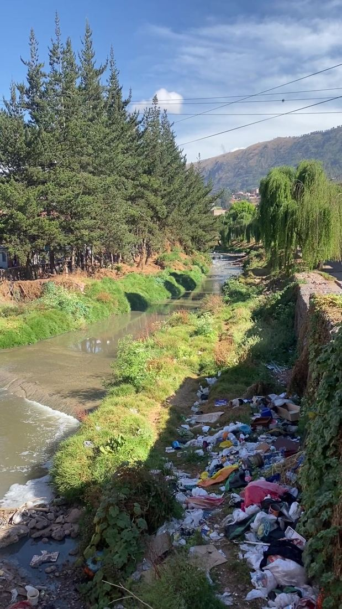
Del problema a la solución
Hoy el plástico de Cusco termina en el río, en el botadero o en un camión a Lima. Pero ese mismo plástico dura cientos de años: es un material perfecto para bancas, posavasos y muebles que no se pudren. Lo que contamina hoy puede amoblar las plazas de mañana.
Misión
Historias de los Andes en dos idiomas, para que más gente cuide lo que ve.
Talleres en colegios, empresas y comunidades: qué plástico sirve y qué hacer con él.
Piezas hechas a mano en Cusco, con plástico de Cusco, pagando un precio justo a quien recicla.
El Cusco que imaginamos · arrastra
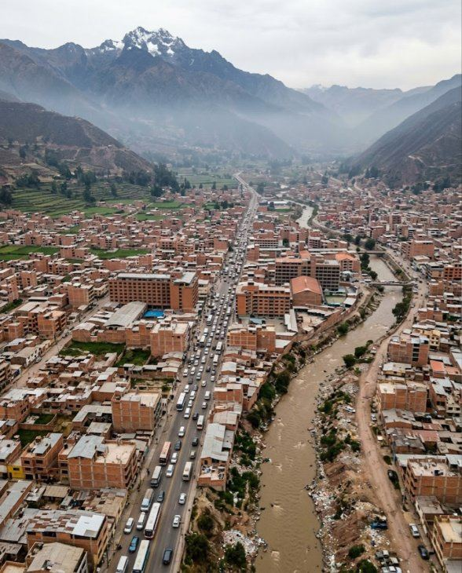
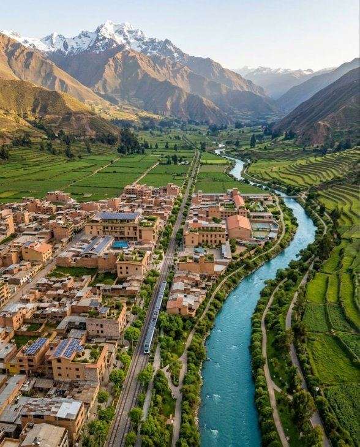
HoyMañana · IA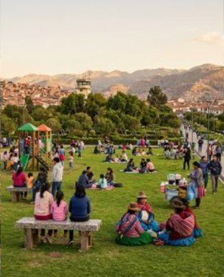
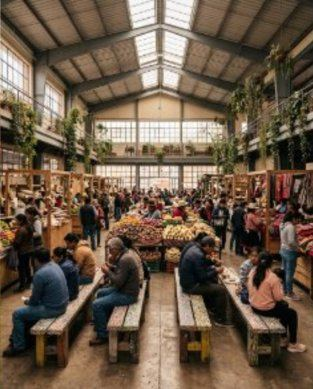
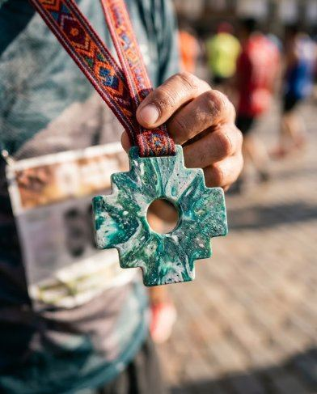
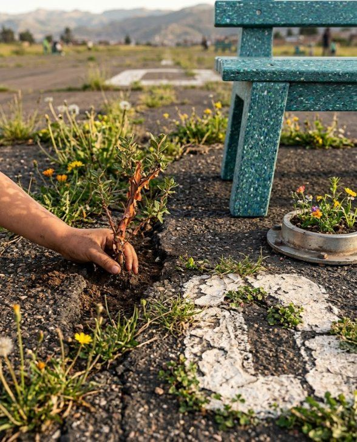
Nuestra historia
Antes
Estudios en Portland State University y tres años en la industria de residuos.
2026
Greensonqo empieza a contar los Andes. El video del cóndor pasa el medio millón de vistas.
Agosto 2026
Primeros bloques de plástico hechos a mano, con una prensa casera.
31 octubre 2026
Primer Tapatón con Casa Malaquita. El mismo día firmamos el taller de San Jerónimo.
Noviembre 2026
Un maestro cusqueño construye la extrusora y la trituradora. Salen los primeros posavasos.
Lo que viene
La Pieza Nº 0001 y más puntos de acopio en todo Cusco.
Cofundador
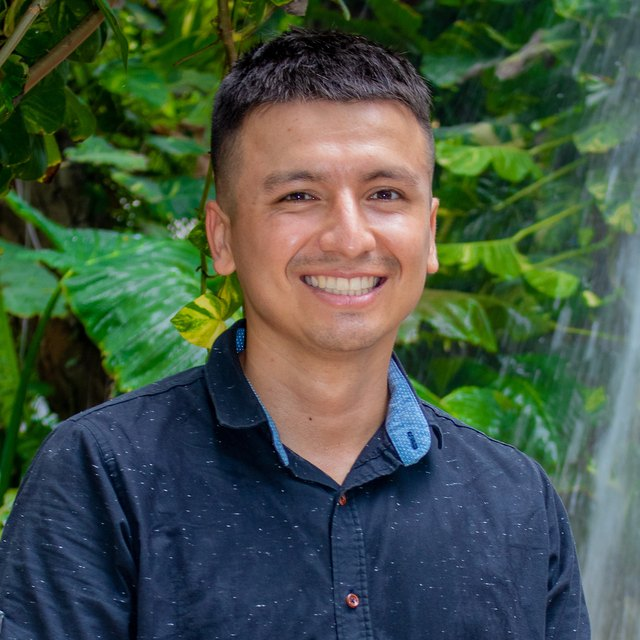
Cofundador · Greensonqo
Peruano y estadounidense. Estudió en Portland State University, donde su tesis midió cómo las hojas de eucalipto liberan isopreno al aire, y trabajó tres años en la industria de residuos en Estados Unidos. Allí aprendió que la basura es un problema de diseño, no de destino.
Hoy vive en Cusco, cuenta las historias de los Andes en Greensonqo y dirige el taller de San Jerónimo, donde el plástico del barrio se vuelve piezas hechas a mano.
Apoyar
Con esto sale la Pieza Nº 0001: la primera banca hecha 100% con plástico de Cusco.
Una donación única desde tu celular.
Lo más simple: junta tus tapitas limpias y llévalas a un punto de acopio.
Únete al movimiento
Déjanos tu nombre y correo: te avisamos de Tapatones, talleres y piezas nuevas. Un correo al mes, nada más.